1. Find the group having only marine members.
Bracket OPEN a bracket closed Mollusca Bracket OPEN b bracket closed seelenterata Bracket OPEN c bracket closed Echinodermata Bracket OPEN d bracket closed Porifera
2. Mesoglea is present in
Bracket OPEN a bracket closed Porifera Bracket OPEN b bracket closed Seelenterata Bracket OPEN c bracket closed Annelida Bracket OPEN d bracket closed Arthropoda
3. Which one of the following pairs is not a poikilothermic animal question mark
Bracket OPEN a bracket closed Fishes and Amphibians Bracket OPEN b bracket closed Amphibians and Aves
Bracket OPEN c bracket closed Aves and Mammals Bracket OPEN d bracket closed Reptiles and Mammals
4. Identify the animal having four chambered heart.
Bracket OPEN a bracket closed Lizard Bracket OPEN b bracket closed Snake Bracket OPEN c bracket closed Crocodile Bracket OPEN d bracket closed Calotes
5. The animal without skull is
Bracket OPEN a bracket closed Acrania Bracket OPEN b bracket closed Acephalia Bracket OPEN c bracket closed Apteria Bracket OPEN d bracket closed Aseelomate
6. Hermaphrodite organisms are
Bracket OPEN a bracket closed Hydra, Tape worm, Earthworm, Amphioxus
Bracket OPEN b bracket closed Hydra, Tape worm, Earthworm, Ascidian
Bracket OPEN c bracket closed Hydra, Tape worm, Earthworm, Balanoglossus
Bracket OPEN d bracket closed Hydra, Tape worm, Ascaris, Earthworm
7. Poikilothermic organisms are
Bracket OPEN a bracket closed Fish, Frog, Lizard, Man
Bracket OPEN b bracket closed Fish, Frog, Lizard, Cow
Bracket OPEN c bracket closed Fish, Frog, Lizard, Snake
Bracket OPEN d bracket closed Fish, Frog, Lizard, Crow
8. Air sacs and Pneumatic bones are seen in
Bracket OPEN a bracket closed fish Bracket OPEN b bracket closed frog Bracket OPEN c bracket closed bird Bracket OPEN d bracket closed bat
9. Excretory organ of tape worm is
Bracket OPEN a bracket closed flame cells Bracket OPEN b bracket closed nephridia Bracket OPEN c bracket closed body surface Bracket OPEN d bracket closed solenocytes
10. Water vascular system is found in
Bracket OPEN a bracket closed Hydra Bracket OPEN b bracket closed Earthworm Bracket OPEN c bracket closed Star fish Bracket OPEN d bracket closed Ascaris
1. The skeletal framework of Porifera is Dash
2. Ctenidia are respiratory organs in Dash
3. Skates are Dash fishes.
4. The larvae of an amphibian is Dash
5. Dash are jawless vertebrates.
6. Dash is the unique characteristic feature of mammal.
7. Spiny anteater is an example for Dash mammal.
1. Canal system is seen in coelenterates.
2. Hermaphrodite animals have both male and female sex organs.
3. Trachea are the respiratory organ of Annelida.
4. Bipinnaria is the larva of Mollusca.
5. Balanoglossus is a ciliary feeder.
6. Fishes have two chambered heart.
7. Skin of reptilians are smooth and moist.
8. Wings of birds are the modified forelimbs.
9. Female mammals have mammary glands.
PHYLUM EXAMPLES
Bracket OPEN A bracket closed seelenterata Bracket OPEN 1 bracket closed Snail
Bracket OPEN B bracket closed Platyhelminthes Bracket OPEN 2 bracket closed Starfish
Bracket OPEN C bracket closed Echinodermata Bracket OPEN 3 bracket closed Tapeworm
Bracket OPEN D bracket closed Mollusca Bracket OPEN 4 bracket closed Hydra
1. Define taxonomy.
2. What is nematocyst question mark
3. Why coelenterates are called diploblastic animals question mark
4. List the respiratory organs of amphibians.
5. How does locomotion take place in starfish question mark
6. Are jellyfish and starfish similar to fishes question mark If no justify the answer.
7. Why are frogs said to be amphibians question mark
1. Give an account on phylum Annelida.
2. Differentiate between flat worms and round worms question mark
3. Outline the flow charts of Phylum Cardata.
4. List five characteristic features of fishes.
5. Comment on the aquatic and terrestrial habits of amphibians.
6. How are the limbs of the birds adapted for avian life question mark
1. Describe the characteristic features of different Procardates.
2. Give an account on phylum Arthropoda.
1. Manual of Zoology Vol. 1. Part 1. Bracket OPEN Invertebrata bracket closed, M. Ekambaranatha Ayyar and T.N. Ananthakrishnan, Reprint 2003. S. Viswanathan Bracket OPEN Printers and Publishers bracket closed Pvt. Ltd Chennai.
2. Manual of Zoology Vol. 1. Part. 2. Bracket OPEN Invertebrata bracket closed, M. Ekambaranatha Ayyar and T.N. Ananthakrishnan, Reprint 2003. S. Viswanathan Bracket OPEN Printers and Publishers bracket closed Pvt. Ltd Chennai.
3. Manual of Zoology Vol. 2. Chordata M. Ekambaranatha Ayyar and T.N. Ananthakrishnan, Reprint 2003. S. Viswanathan Bracket OPEN Printers and Publishers bracket closed Private. Limited Chennai.
INTERNET RESOURCES
http://home.pcisys.net/~dlblanc/taxonomy. html
http://can-do.com/uci/lessons 98/Invertebrates.html
http://www.student.loretto.org/zoology/ chordates.html
Animal Kingdom
It includes Chordates and Invertebrates. Chordate includes Procardate and Vertebrate
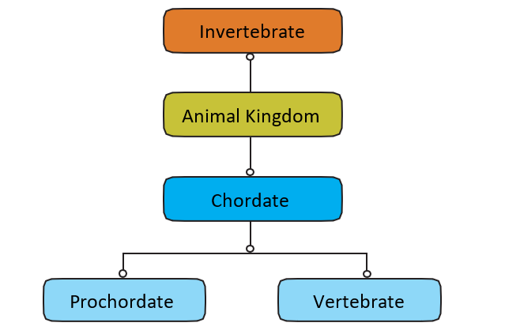
After completing this lesson, students will be able:
know the different types of tissues and their morphology.
identify how tissues are organized in specific patterns to form organs.
understand how tissues perform life activities in plants and animals.
gain knowledge about the structural organisation of tissues.
get familiarized with the process, types and significance of cell division.
Unicellular organisms like bacteria and protozoans are made of single cells. On the other hand, multicellular organisms, like higher plants and animals, are composed of millions of different types of cells that are grouped into different levels of organization. Multicellular organisms have specialized cells, tissues, organs and organ systems that perform specific functions.
Group of cells positioned and designed to perform a particular function is called a tissue. An organ is a structure made up of a collection of tissues that carry out specialized functions. For example, in plants the root, stem and leaves are organs, whereas xylem and phloem are tissues. Similarly in animals stomach, for example, is an organ that consists of tissues made of epithelial cells, gland cells and muscle cells. In this chapter, you will learn about different types of plant and animal tissues and how they are modified to coordinate life activities.
In general, plant tissues are classified into two types namely:
1. Meristems or Meristematic tissues.
2. Permanent tissues
The term 'meristem' is derived from the greek word Meristos’ which means divisible or having cell division activity. Meristematic tissues are group of immature cells that are capable of undergoing cell division. In plants, meristem is found in zones where growth can take place. Example: apex of stem, root, leaf primordia, vascular cambium, cork cambium, etc.,
A bracket closed They are living cells.
B bracket closed Cells are small, oval, polygonal or round in shape.
C bracket closed They are thin walled with dense cytoplasm, large nuclei and small vacuoles.
D bracket closed They undergo mitotic cell division.
E bracket closed They do not store food materials.
On the basis of their position in the plant, meristems are of three types: Apical meristem, Intercalary meristem and Lateral meristem.
Figure 18.1 Longitudinal section of shoot apex showing location of meristems and young leaves. Image was given below
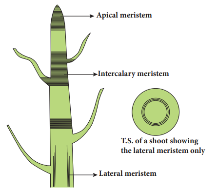
Apical meristem: These are found at the apices or growing points of root and shoot and bring about increase in length.
Intercalary meristem: It lies between the region of permanent tissues and is part of primary meristem. It is found either at the base of leaf Bracket OPEN Example pinus bracket closed or at the base of internodes Bracket OPEN Example grasses bracket closed.
Lateral Meristem: These are arranged parallel and causes the thickness of the plant part.
B. Functions Meristems are actively dividing tissues of the plant, that are responsible for primary Bracket OPEN elongation bracket closed and secondary Bracket OPEN thickness bracket closed growth of the plant.
Permanent tissues are those in which, growth has stopped either completely or for the time being. At times, they become meristematic partially or wholly. Permanent tissues are of two types, namely: simple tissue and complex tissue.
Simple tissues are homogeneous tissues composed of structurally and functionally similar cells. Example, Parenchyma, Collenchyma and Sclerenchyma.
Parenchyma: Parenchyma are simple permanent tissues composed of living cells. Parenchyma cells are thin walled, oval, rounded or polygonal in shape with well developed spaces among them. In aquatic plants, parenchyma possesses intercellular air spaces, and is named as Aerenchyma. When exposed to light, parenchyma cells may develop chloroplasts and are known as Chlorenchyma.
Figure 18.2 Types of Parenchyma image was given below
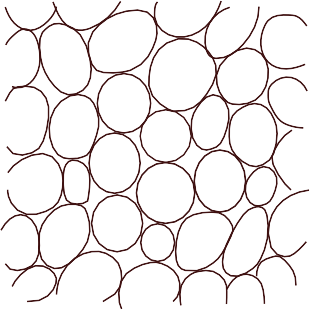
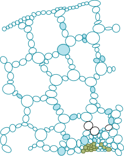
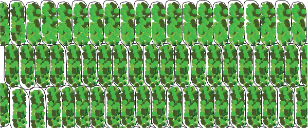
Parenchyma may store water in many succulent and xerophytic plants. It also serves the functions of storage of food reserves, absorption, buoyancy, secretion etc.,
Box item open
In potato, parenchyma vacuoles are filled with starch. In apple, parenchyma stores sugar
box item ends
Collenchyma: Collenchyma is a living tissue found beneath the epidermis. Cells are elongated with unevenly thickened walls Cells have rectangular oblique or tapering ends and persistent protoplast. They possess thick primary non-lignified walls. They provide mechanical support for growing organs.
Figure 18.3 Collenchyma image was given below
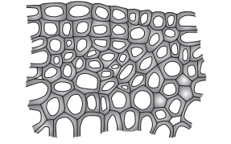
Sclerenchyma:
Sclerenchyma consists of thick walled cells which are often lignified. Sclerenchyma cells are dead and do not possess living protoplasts at maturity. Sclerenchyma cells are grouped into fibres and sclereids.
Fibres are elongated sclerenchymatous cells, usually with pointed ends. Their walls are lignified. Fibres are abundantly found in many plants. The average length of fibres is 1 to 3 mm, however in plants like Linum usitatissimum Bracket OPEN flax bracket closed, Cannabis sativa Bracket OPEN hemp bracket closed and Corchorus capsularis Bracket OPEN jute bracket closed, fibres are extensively longer, ranging from 20 mm to 550 mm.
Sclereids are widely distributed in plant body. They are usually broad, may occur in single or in groups. Sclereids are isodiametric, with liginified walls. Pits are prominent and seen along the walls. Lumen is filled with wall materials. Sclereids are also common in fruits and seeds.
18.4 Sclerenchyma Bracket OPEN a bracket closed Fibres, Bracket OPEN b bracket closed Sclereids image was given below
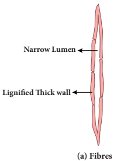
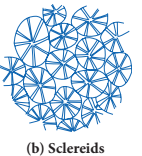
Complex tissues are made of more than one type of cells that work together as a unit. Complex tissues consist of parenchyma and sclerenchyma cells. However, collenchymatous cells are not present in such tissues. Common examples are xylem and phloem.
Xylem is a conducting tissue which conducts water, mineral nutrients upward from root to leaves. Xylem gives mechanical support to the plant body. Xylem is composed of: Bracket OPEN 1 bracket closed xylem tracheids Bracket OPEN 2 bracket closed xylem fibres Bracket OPEN 3 bracket closed xylem vessels and Bracket OPEN 4 bracket closed xylem parenchyma.
Xylem tracheids: These are elongated or tube-like dead cells with hard, thick and lignified walls. Their ends are tapering, blunt or chisel-like and devoid of protoplast. They have large lumen without any content. Their function is conduction of water and providing mechanical support to the plant
Figure 18.5 A. xylem longitudinal section B. xylem transverse section image was given below
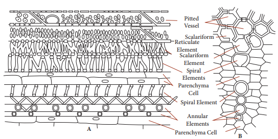
Xylem fibres: These cells are elongated, lignified and pointed at both the ends. Xylem fibres provide mechanical support to the plant.
Xylem vessels: These are long cylindrical, tube like structures with lignified walls and wide central lumen. These cells are dead as these do not have protoplast. They are arranged in longitudinal series in which the partitioned walls Bracket OPEN transverse walls bracket closed are perforated, and so the entire structure looks-like a water pipe. Their main function is to transport of water and also to provide mechanical strength.
Xylem parenchyma: These are living and thin walled cells. The main function of xylem parenchyma is to store starch and fatty substances.
Figure 18.6 Longitudinal section of Phloem tissue image was given below
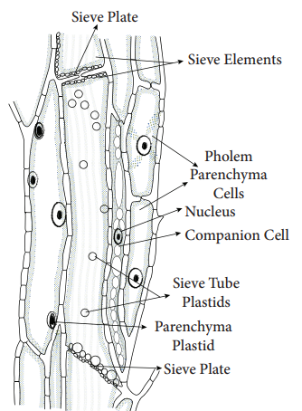
Phloem is a complex tissue and consists of the following elements: Sieve elements, Companion cells, Phloem fibres, and Phloem parenchyma.
Sieve elements: The conducting elements of phloem are collectively called as Sieve elements. Sieve tubes are elongated, tube-like slender cells placed end to end. The transverse walls at the ends are perforated and are known as sieve plates. The main function of sieve tubes is translocation of food, from leaves to the storage organs of the plants.
Companion cells: These are elongated cells attached to the lateral wall of the sieve tubes. A companion cell may be equal in length to the accompanying sieve tube element or the mother cell may be divided transversely forming a series of companion cells.
Phloem parenchyma: The phloem parenchyma are living cells which have cytoplasm and nucleus. Their function is to store food materials.
Table 18.1 Differences between Xylem and Phloem was given below
Xylem |
Phloem |
Conducts water and minerals. |
Conducts organic solutes or food materials. |
Conduction is mostly unidirectional That is, from roots to apical parts of the plant. |
Conduction may be bidirectional from leaves to storage organs and growing parts or from storage organs to growing parts of plants. |
Conducting channels are tracheids and vessels. |
Conducting channels are sieve tubes. |
Component of xylem include tracheid vessels, xylem parenchyma and xylem fibres. |
Components are sieve elements, companion cells, phloem parenchyma and phloem fibres. |
Phloem fibers: Sclerenchymatous cells associated with primary and secondary phloem are commonly called phloem fibers. These cells are elongated, lignified and provide mechanical strength to the plant body
Table 18.2 Differences between Meristematic tissue and Permanent tissue.was given below
Meristematic tissue |
Permanent tissue |
Cell wall is thin and elastic. |
Cell wall is thick. |
Component cells are small,spherical or polygonal and undifferentiated. |
Component cells are large, differentiated with different shapes. |
Cytoplasm is dense, and vacuoles are nearly absent. |
Usually large central vacuole is present in living permanent cells. |
Intercellular spaces absent. |
Intercellular spaces present. |
Nucleus is large and prominent. |
Nucleus is less conspicuous. |
Cells grow and divide regularly. |
Cells do not normally divide. |
Provides mechanical support and elasticity to the plant body. |
Provides only mechanical support. |
An assemblage of one or more types of specialized cells held together with extracellular material constitute the tissue. The study of tissues is known as Histology.
Simple tissue: A group of cells that are similar in origin, form, structure and work together to perform a specific function.
Compound tissue: A group of cells different in their structure and function but co-ordinate to perform a specific function
Animal tissues can be grouped into four basic types on the basis of their structure and functions.
a. Epithelial tissue. b. Connective tissue
c. Muscular tissue d. Nervous tissue
It is the simplest tissue composed of one or more layers of cells covering the external surface of the body and internal organs. The cells are arranged very close to each other with less extracellular material. Epithelial cells lie on a non-cellular basement membrane. The epithelial tissue generally lacks blood vessels. The epithelium is separated by the underlying connective tissue which provides it with nutrients. There are two types of epithelial tissues. Simple epithelium is composed of single layer of cells resting on a basement membrane. Compound epithelium is composed of several layers of cells. Only the cells of the deepest layer rest on the basement membrane.
1. The skin which forms the outer covering of the body protects the underlying cells from drying, injury and microbial infections.
2. They help in absorption of water and nutrients.
3. They are involved in elimination of waste products.
4. Some epithelial tissues perform secretory function Bracket OPEN Secretion of sweat, saliva, mucus and enzymes bracket closed.
It is formed of single layer of cells. It forms a lining for the body cavities and ducts. Simple epithelium is further divided into following types.
Figure 18.7 Squamous Epithelium image was given below
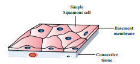
Squamous Epithelium: It is made up of thin, flat cells with prominent nuclei. These cells have irregular boundaries and bind with neighbouring cells. The squamous epithelium is also known as pavement membrane, which form delicate lining of the buccal cavity, alveoli of lungs, proximal tubule of kidneys and covering of the skin and tongue. It protects the body from mechanical injury, drying and invasion of germs.
Cuboidal Epithelium: It is composed of single layer of cubical cells. The nucleus is round and lies in the centre. This tissue is present in the thyroid vesicles, salivary glands, sweat glands and exocrine pancreas. It is also found in the intestine and tubular part of the nephron Bracket OPEN kidney tubules bracket closed as microvilli that increase the absorptive surface area. Their main function is secretion and absorption.
Figure 18.8 Cuboidal Epithelium image was given below
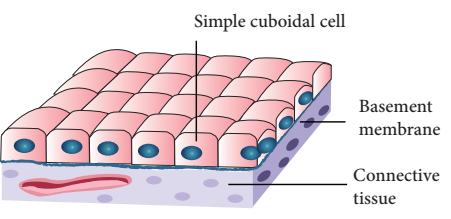
Columnar Epithelium: It is composed of a single layer of slender, elongated and pillar like cells. Their nuclei are located at the base. It is found lining the stomach, gall bladder, bile duct, small intestine, colon, oviducts and also forms the mucous membrane. They are mainly involved in secretion and absorption.
Figure 18.9 Columnar Epithelium image was given below
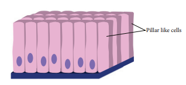
Ciliated Epithelium: Certain columnar cells bear numerous delicate hair like out growths called cilia and are called ciliated epithelium. Their function is to move particles or mucus in a specific direction over the epithelium. It is seen in the trachea of wind-pipe, bronchioles of respiratory tract, kidney tubules and fallopian tubes of oviducts.
Figure 18.10 Ciliated Epithelium image was given below
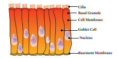
Glandular Epithelium: Epithelial cells are often modified to form specialized gland cells which secrete chemical substances at the epithelial surface. This lines the gastric glands, pancreatic tubules and intestinal glands.
Figure 18.11 Glandular epithelium image was given below
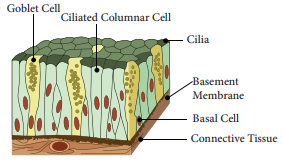
It consists of more than one layer of cells and gives a stratified appearance. Hence, they are also known as stratified epithelium. The main function of this epithelium is to give protection to the underlying tissues against mechanical and chemical stress. They also cover the dry surface of the skin, the moist surface of the buccal cavity and pharynx.
Box item open
Epithelial tissue in the skin functions as a water-proof membrane.
Box item ends
Figure 18.12 Compound Epithelium image was given below
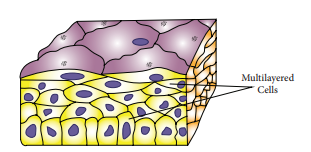
Box item open
Rinse your mouth with water. Using a tooth pick or ice-cream stick, scrap superficial cells from inner side of the cheek and spread it on a clean glass slide. Dry the glass slide with the scrap cells taken from the inner side of cheek. Add two drops of methylene blue stain. Identify the cells under low and high power of the microscope. box item ends
It is one of the most abundant and widely distributed tissue. It provides structural frame work and gives support to different tissues forming organs. It prevents the organs from getting displaced by body movements.
The components of the connective tissue are the intercellular substance known as the matrix, connective tissue cells and fibres. Connective tissue is classified as follows:
Connective tissue proper Bracket OPEN Areolar and Adipose tissue bracket closed
Supportive connective tissue Bracket OPEN Cartilage and Bone bracket closed
Dense connective tissue Bracket OPEN Tendons and Ligaments bracket closed
Fluid connective tissue Bracket OPEN Blood and Lymph bracket closed
Figure 18.13 Areolar tissue image was given below
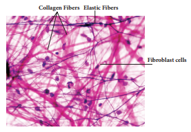
Connective tissue proper consist of collagen fibres, elastin fibres and fibroblast cells.
Areolar tissue: It has cells and fibres loosely arranged in a semi-fluid ground substance called matrix. It takes the form of fine threads crossing each other in every direction leaving small spaces called areolae. It joins skin to muscles, fills space inside organs and is found around muscles, blood vessels and nerves. It helps in repair of tissues after injury and fixes skin to underlying muscles.
Adipose Tissue: Adipose tissue is the aggregation of fat cells or adipocytes, spherical or oval in shape. It serves as fat reservoir.
Figure 18.14 Adipose tissue image was given below
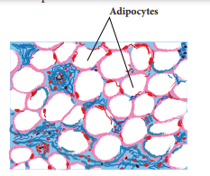
They are found in subcutaneous tissue, between internal organs around the heart and kidneys. They act as shock absorbers around the kidneys and eye balls. They also regulate the body temperature by acting as insulator.
The supporting or skeletal connective tissues forms the endoskeleton of the vertebrate body which protect various organs and help in locomotion. The supportive tissues include cartilage and bone.
Cartilage: They are soft, semi-rigid, flexible and are less vascular in nature. The matrix is composed of large cartilage cells called chondrocytes. These cells are present in fluid filled spaces known as lacunae.
Cartilage is present in the tip of the nose, external ear, end of long bones, trachea and larynx. It provides support and flexibility to the body parts.
Figure 18.15 Cartilage image was given below
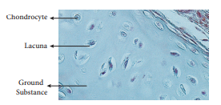
Bone It is solid, rigid and strong, non-flexible skeletal connective tissue. The matrix of the bone is rich in calcium salts and collagen fibres which gives the bone its strength. The matrix of the bone is in the form of concentric rings called lamellae. The bone cells present in lacunae are called osteocytes. They communicate with each other by a network of fine canals called canaliculi. The hollow cavities of spaces are called marrow cavities filled with bone marrow. They provide shape and structural framework to the body. Bones support and protect soft tissues and organs.
Figure 18.16 Transverse Section of Bone image was given below
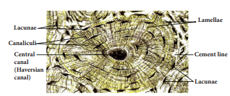
3. Dense Connective Tissue:
It is a fibrous connective tissue densely packed with fibres and fibroblasts. It is the principal component of tendons and ligaments.
Tendons: They are cord like, strong, structures that join skeletal muscles to bones. Tendons have great strength and limited flexibility. They consist of parallel bundles of collagen fibres, between which are present rows of fibroblasts.
Figure 18.17 Tendon image was given below
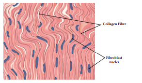
Ligaments: They are highly elastic structures and have great strength which connect bones to bones. They contain very little matrix. They strengthen the joints and allow normal movement.
Figure 18.18 Ligament image was given below
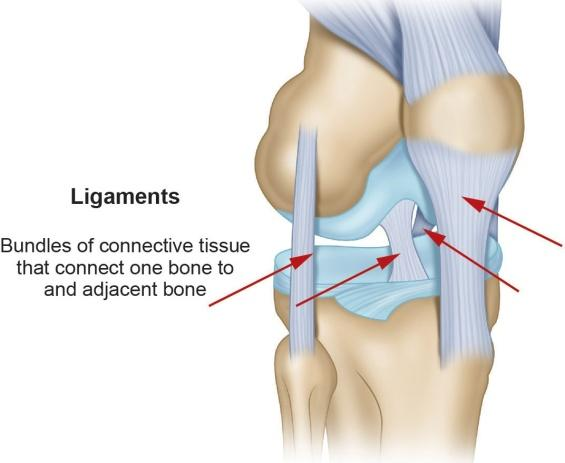
Box item open
Sprain is caused by excessive pulling Bracket OPEN stretching bracket closed of ligament box item ends
4. Fluid connective tissue:
The blood and the lymph are the fluid connective tissues which link different parts of the body. The cells of the connective tissue are loosely spaced and are embedded in an intercellular matrix.
a. Blood
Blood contains corpuscles which are red blood cells Bracket OPEN erythrocytes bracket closed, white blood cells Bracket OPEN leucocytes bracket closed and platelets. In this fluid connective tissue, blood cells are present in a fluid matrix called plasma. The plasma contains inorganic salts and organic substances. It is a main circulating fluid that helps in the transport of nutrient substances.
Red blood corpuscles Bracket OPEN Erythrocytes bracket closed: The red blood corpuscles are circular, biconcave disc-like cells and lack nucleus when mature Bracket OPEN mammalian RBC bracket closed. They contain a respiratory pigment called haemoglobin which is involved in the transport of oxygen to tissues.
White blood corpuscles Bracket OPEN Leucocytes bracket closed: They are larger in size, contain distinct nucleus and are colourless. They are capable of amoeboid movement and play an important role in body’s defense mechanism. They engulf or destroy foreign bodies. WBC’s are of two types: Granulocytes and Agranulocytes. Granulocytes have irregular shaped nuclei and cytoplasmic granules. They include the neutrophils, basophils and eosinophils. Agranulocytes lack cytoplasmic granules and include the lymphocytes and monocytes.
Blood platelets: They are minute, anucleated, fragile fragments of giant bone marrow called mega karyocytes. They play an important role in blood clotting mechanism.
Figure 18.19 Blood cells image was given below
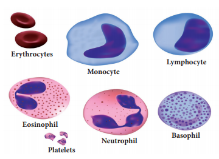
b. Lymph
Lymph is a colourless fluid filtered out of the blood capillaries. It consists of plasma and white blood cells. It mainly helps in the exchange of materials between blood and tissue fluids.
Muscular tissues are made of muscle cells and form the major part of contractile tissue. They are composed of numerous myofibrils. Each muscle is made up of many long cylindrical fibres arranged parallel to one another.
According to their structure, location and functions there are three main types of muscles: Skeletal muscle Bracket OPEN or bracket closed striated muscle, Smooth muscle Bracket OPEN or bracket closed non-striated muscle and Cardiac muscle.
Skeletal muscle: These muscles are attached to the bones and are responsible for the body movements and are called skeletal muscles. They work under our control and are also known as voluntary muscles. The muscle fibres are elongated, cylindrical, unbranched with alternating dark and light bands, giving them the striped or striated appearance. They possess many nuclei Bracket OPEN multinucleate bracket closed. For example they occur in the biceps and triceps of arms and undergo rapid contraction.
Smooth muscle: These muscles are spindle shaped with broad middle part and tapering ends. There is a single centrally located nucleus Bracket OPEN uninucleate bracket closed. These fibrils do not bear any stripes or striations and hence are called non-striated. They are not under the control of our will and so are called involuntary muscles. The walls of the internal organs such as the blood vessels, gastric glands, intestinal villi and urinary bladder contain this type of smooth muscle.
Cardiac muscle: It is a special contractile tissue present in the heart. The muscle fibres are cylindrical, branched and uninucleate. The branches join to form a network called as intercalated disc which are unique distinguishing features of the cardiac muscles. The contraction of cardiac muscle is involuntary and rhythmic.
Figure 18.19 Muscle tissue image was given below
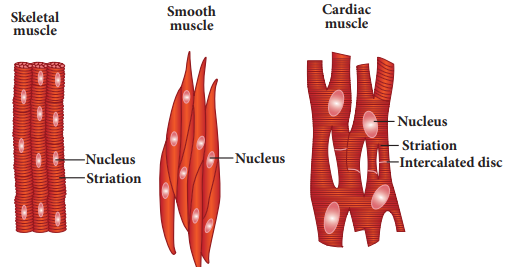
Nervous tissue comprises of the nerve cells or neurons. They are the longest cells of the body. Neurons are the structural and functional units of the nervous tissue. The elongated and slender processes of the neurons are the nerve fibres. Each neuron consists of a cell body or cyton with nucleus and cytoplasm. The dendrons are short and highly branched protoplasmic processes of cyton. The axon is a single, long fibre like process that develops from the cyton and ends up with fine terminal branches.
Figure 18.20 Neuron image was given below
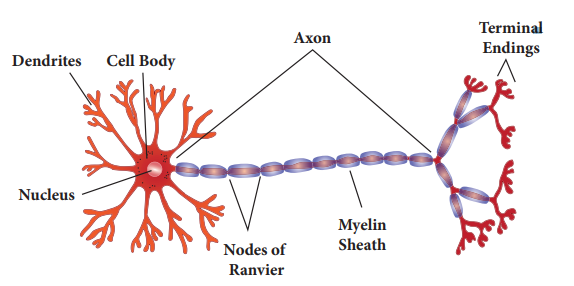
Box item open
Age of our body cells
Cells of the eye lens, nerve cells of cerebral cortex and most muscle cells last a life time but once dead are not replaced.
Epithelial cells lining the gut last only about 5 days.
Duration of cell replacement
Skin cells- about every 2 weeks.
Bone cells- about every 10 years.
Liver cells- about every 300 to 500 days.
Red blood cells last for about 120 days and are replaced. box item ends
They have the ability to receive stimuli from within or outside the body and send signals to different parts of the body.
Box item open
Nerve cells do not undergo cell division due to the absence of centrioles, but they are developed from glial cells by neurogenesis
box item ends
Are you aware that all living organisms start their life from a single cell question mark You may wonder how a single cell then goes to form such a large organism. All cells reproduce by division and division of cells into daughter cells is called cell division.
The three types of cell division that occur in animal cells are:
1. Amitosis - Direct Division
2. Mitosis - Indirect Division
3. Meiosis - Reduction Division
It is the simplest mode of cell division and it occurs in unicellular animals, ageing cells and in foetal membranes. During amitosis, nucleus elongates first, and a constriction appears in it which deepens and divides the nucleus into two. Followed by this cytoplasm divides resulting in the formation of two daughter cells.
Figure 18.21 Amitosis image was given below
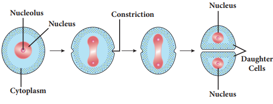
It was first discovered by Fleming in 1879. In this cell division one parent cell divides into two identical daughter cells, each with a nucleus having the same amount of DNA same number of chromosomes and genes as the parent cells. It is also called as equational division.
Figure 18.22 Events of Mitosis image was given below
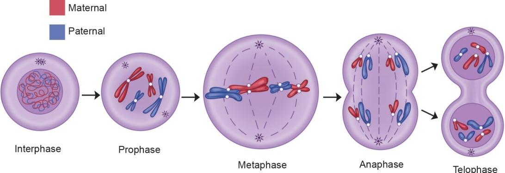
Mitosis consists of two events, they are:
1. Karyokinesis 2. Cytokinesis
Interphase: It is the resting phase of the nucleus. It is the interval between two successive cell divisions. The cell prepares itself for the next cell division.
The division of the nucleus into two daughter nuclei is called Karyokinesis. It consists of four phases. They are: Prophase, Metaphase, Anaphase and Telophase.
Prophase Bracket OPEN pro-first bracket closed: During this stage chromosomes become short and thick and are clearly visible inside the nucleus. Centrosome splits into centrioles and occupy opposite poles of the cell. Each centriole is surrounded by aster rays. Spindle fibres appear between the two centrioles. Nuclear membrane and nucleolus disappear gradually.
Metaphase Bracket OPEN meta – after bracket closed: The duplicated chromosomes arrange on the equatorial plane and form the metaphase plate. Each chromosome gets attached to a spindle fibre by its centromere. The centromere of each chromosome divides into two each being associated with a chromatid.
Anaphase Bracket OPEN ana – up, back bracket closed: The centromeres attaching the two chromatids divide and the two daughter chromatids of each chromosome separate and migrate towards the two opposite poles.
Telophase Bracket OPEN tele – end bracket closed: Each chromatid Bracket OPEN or bracket closed daughter chromosome lengthens, becomes thinner and turns into a network of chromatin threads. Spindle fibres breakdown and disappear. Nuclear membrane and nucleolus reappear in each daughter nucleus.
The division of the cytoplasm into two daughter cells by constriction of the cell membrane is called cytokinesis.
Figure 18.23 Cytokinesis image was given below
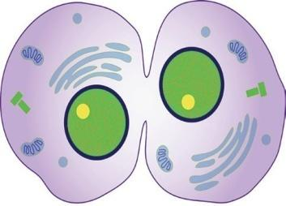
1. This equational division results in the production of diploid daughter cells Bracket OPEN 2 n bracket closed with equal distribution of genetic material Bracket OPEN DNA bracket closed.
2. In multicellular organisms growth, organ development and increase in body size are accomplished through the process of mitosis
3. Mitosis helps in repair of damaged and wounded tissues by renewal of the lost cells.
The term meiosis was coined by Farmer in 1905. It is the kind of cell division that produces the sex cells or the gametes. It is also called reduction division because the chromosome number is reduced to haploid Bracket OPEN n bracket closed from diploid Bracket OPEN 2n bracket closed. Meiosis produces four daughter cells from a parent cell.
Meiosis consists of two divisions. They are:
Heterotypic Division or First Meiotic Division
Homotypic Division or Second Meiotic Division
It divides the diploid cell into two haploid cells. The daughter cells resulting from this division are different from the parent cell in the chromosome number Bracket OPEN Heterotypic bracket closed. This consists of 5 stages:
a. Prophase 1 b. Metaphase 1
c. Anaphase 1 d. Telophase 1
e. Cytokinesis 1
Prophase 1 takes a longer duration and is sub divided into five stages. They are: Leptotene, Zygotene, Pachytene, Diplotene and Diakinesis.
Leptotene: The chromosomes become uncoiled and assume long thread like structures and take up a specific orientation inside the nucleus. They form a bouquet stage.
Zygotene Bracket OPEN Zygon-adjoining bracket closed: Two homologous chromosomes approach each other and begin to pair. Pairing of homologous chromosomes is called as synapsis.
Pachytene Bracket OPEN Pachus-thick bracket closed: The chromosomes are visible as long paired twisted threads. The pairs so formed are called bivalents. Each bivalent now contains four chromatids Bracket OPEN tetrad stage bracket closed
Homologous chromosomes of each pair begin to separate. They do not completely separate, but remain attached together at one or more points by X- shaped arrangements known as chiasmata. The chromatids break at these points and the broken segments may be interchanged Bracket OPEN crossing over bracket closed. As a result, the genetic recombination takes place.
Diplotene: Each individual chromosome of each bivalent begins to split longitudinally into two similar chromatids. The homologous chromosomes repel each other and separate. Chiasmata begin to move along the length of the chromosome from the centromere towards the end resulting in terminalization.
Diakinesis: The paired chromosomes are shortened and thickened. The nuclear membrane and nucleolus begin to disappear. Spindle fibres make their appearance.
The chromosomes move towards the equator and finally they orient themselves on the equator. The two chromatids of each chromosome do not separate. The centromere does not divide.
Each homologous chromosome with its two chromatids and undivided centromere move towards the opposite poles of the cell. This stage of the chromosome is called Diad.
The haploid number of chromosomes after reaching their respective poles become uncoiled and elongated. The nuclear membrane and the nucleolus reappear and thus two daughter nuclei are formed.
Figure 18.24 Events of Meiosis image was given below
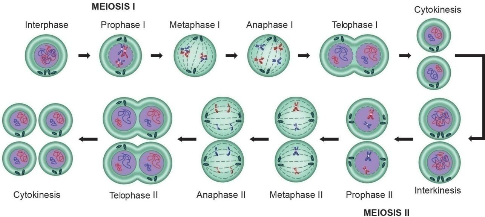
The cytoplasmic division occurs and two haploid cells are formed.
In this division, the two haploid cells formed during first meiotic division divide into four haploid cells. The daughter cells are similar to parent cell in the chromosome number Bracket OPEN Homotypic bracket closed. It consists of five stages.
a. Prophase – 2 b. Metaphase – 2
c. Anaphase – 2 d. Telophase – 2
e. Cytokinesis – 2
The centriole divides into two, each one moves to opposite poles. Asters and spindle fibres appear. Nuclear membrane and nucleolus disappear.
The chromosomes get arranged on the equator. Two chromatids are separated.
The separated chromatids become daughter chromosomes and move to opposite poles.
The daughter chromosomes are centered. The nuclear membrane and the nucleolus appear.
Two cells are formed from each haploid daughter cell, resulting in the formation of four cells with haploid number of chromosomes.
The constant number of chromosomes in a given species is maintained by meiotic division.
Genetic valiation is produced due to crossing over within the species which is transmitted from one generation to next generation
Table 18.3 Differences between Mitosis and Meiosis was given below
Mitosis |
Meiosis |
Occurs in somatic cells. |
Occurs in reproductive cells. |
Involved in growth and occurs continuously throughout life. |
Involved in gamete formation only during the reproductively active age. |
Consists of single division. |
Consists of two divisions. |
Two diploid daughter cells are formed. |
Four haploid daughter cells are formed. |
The chromosome number in the daughter cell is similar to the parent cell Bracket OPEN 2 n bracket closed. |
The chromosome number in the daughter cell is just half Bracket OPEN n bracket closed of the parent cell. |
Identical daughter cells are formed. |
Daughter cells are not similar to the parent cell and are randomly assorted. |
In general plant tissues are classified into two types namely Meristems or Meristematic tissues and Permanent tissues.
Permanent tissues are of two types: simple tissue and complex tissue.
Simple tissues are homogeneous-composed of structurally and functionally similar cells. Example, Parenchyma, Collenchyma and Sclerenchyma.
Complex tissues are made of more than one type of cells that work together as a unit. They are Xylem and Phloem
Animal tissues can be grouped into four basic types on the basis of their structure and functions. Epithelial tissue, Connective tissue, Muscular tissue and Nervous tissue.
Simple epithelium formed of single layer of cells is divided into following types. They are squamous epithelium cuboidal epithelium, columnar epithelium, ciliated epithelium and glandular epithelium
Compound Epithelium consists of more than one layer of cells and gives a stratified appearance.
The three types of cell division that occur in animal cells are Amitosis, Mitosis and Meiosis.
Bivalent Homologous chromosomes before their duplication in meiosis.
Centromere kinetochore or primary constriction.
Chiasma
Point of contact and interchange between chromatids of two homologous chromosomes.
Chromatids
Two identical longitudinal halves of a chromosome which share a common centromere with a sister chromatid.
Diploid Cell having two complete sets of chromosomes.
Haploid Cell having a single complete set of chromosome.
Interphase Resting phase of the cell between two cell divisions.
Isodiametric Having equal diameter of cells or other structures.
Osteocytes Bone cells present between the lamellae in fluid filled spaces called lacunae.
Synapsis Pairing of homologous chromosomes during meiosis.
Tetrad
Four haploid cells arising from meiosis formed from four associated chromatids during synapsis.